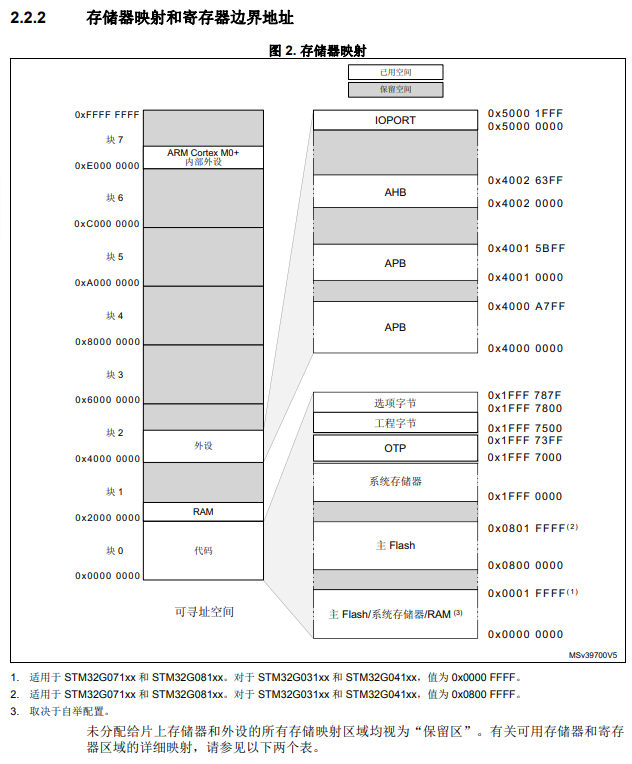

CDCAM 探究
项目地址: cdcam
Hardware
flowchart LR
subgraph 动态库
direction LR
A(STM32G071) -->|DVP| B(OV2640)
C(CDCTL_B1) -->|CD_SPI| A
D(BUS_interface_1) -->|RS485| C
E(BUS_interface_2) -->|RS485| C
A -->|SEN_SPI| F("SRAM(optional)")
end
Firmware
app_main
load_conf()
这段代码通过Kimi.ai的理解如下:
结合您提供的两个代码段，我们可以更全面地理解
load_conf函数的作用和上下文。首先，csa_dft是一个const csa_t类型的常量结构体实例，它定>义了一组默认的配置值，这些值将被用于初始化或验证加载的配置数据。以下是
load_conf函数的详细解释：
uint16_t magic_code = *(uint16_t *)APP_CONF_ADDR;> 从APP_CONF_ADDR地址读取16位的值到magic_code变量，用于检查配置数据的魔法数字。uint16_t conf_ver = *(uint16_t *)(APP_CONF_ADDR + 2);> 从APP_CONF_ADDR地址加上2的位置读取16位的值到conf_ver变量，用于获取配置数据的版本号。csa = csa_dft;将csa_dft的默认配置值复制给csa变量。这是在加载外部配置之前，先使用默认配置作为基础。if (magic_code == 0xcdcd && conf_ver == APP_CONF_VER) { ... }如果读取的魔法数字和版本号与预期的默认值匹配，执行以下操作：
- 使用
memcpy函数将从APP_CONF_ADDR地址开始的数据复制到csa结构体中，直到_end_save成员之前的位置。_end_save是csa_t结构体中定义的一个特殊成员，用于标识需要保存的配置数据的结束位置。- 将
csa结构体中的conf_from成员设置为1，表示配置是从有效的外部来源加载的。else if (magic_code == 0xcdcd && (conf_ver >> 8) == (APP_CONF_VER >> 8)) { ... }如果读取的魔法数字正确，但版本号只有高8位与预期的默认值匹配（可能表示轻微的版本差异），执行以下操作：
- 使用
memcpy函数将从APP_CONF_ADDR地址开始的数据复制到csa结构体中，直到_end_common成员之前的位置。_end_common是csa_t结构体中定义的另一个特殊成员，用于标识通用配置数据的结束位置。- 将
csa结构体中的conf_from成员设置为2，表示配置是从外部来源加载的，但可能存在版本差异。- 更新
csa结构体中的conf_ver成员为APP_CONF_VER，确保版本号是最新的。if (csa.conf_from) ...如果csa结构体的conf_from成员不为0（即配置已经从外部加载），则将csa结构体中的do_reboot成员及其后两个字节清零。这可能是用于重置或禁用自动重启的标志。整体来看，
load_conf函数的作用是尝试从APP_CONF_ADDR地址加载配置数据到csa结构体。如果加载成功或部分成功，它会更新csa结构体的相应成员，并根据配置的来源设置conf_from标志。如果配置加载存在问题，它将回退到使用默认配置csa_dft。
关于APP_CONF_ADDR地址, 实际是MCU内部flash的一个地址:
